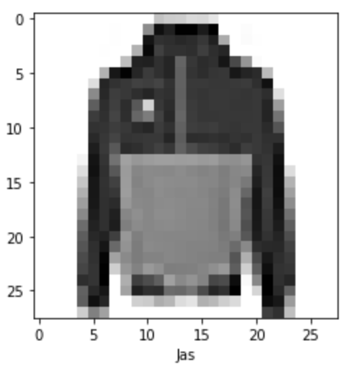
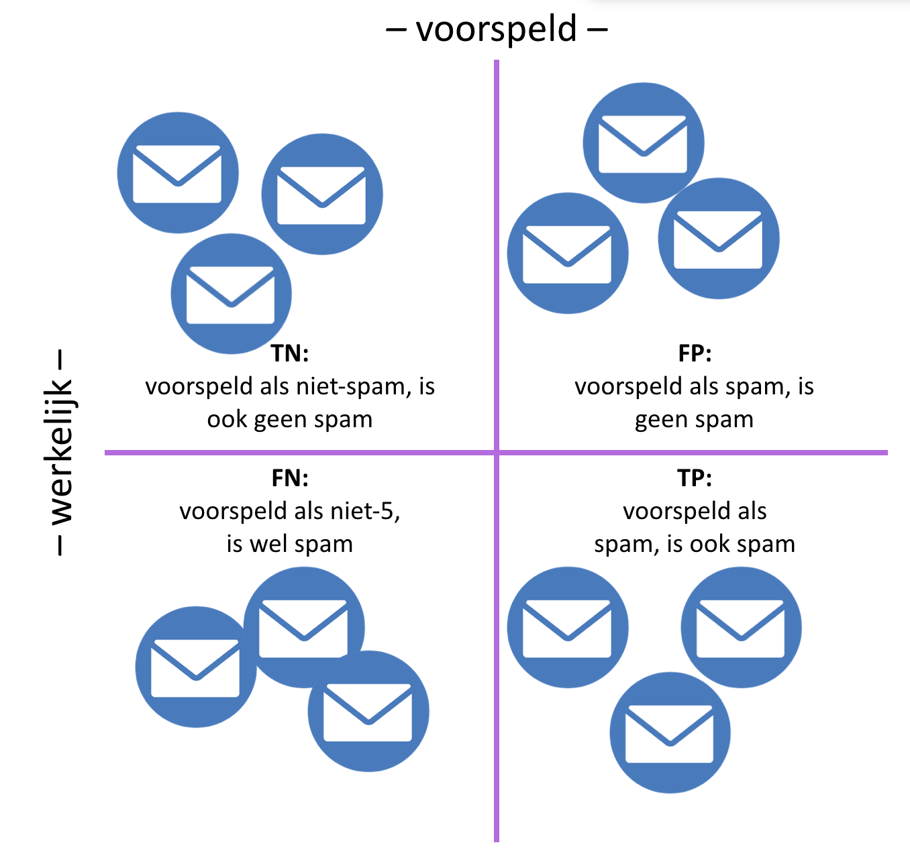
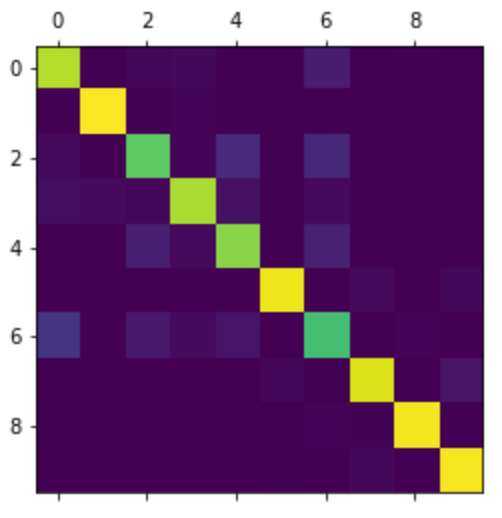

Deel 3 - opgaveset 1¶
Inleiding¶
Deze week staat in het teken van TensorFlow en Keras. Tot nu toe hebben we de programmacode die bij de wiskunde hoorde zelf uitgeprogrammeerd, maar in de praktijk zul je dat niet heel vaak tegenkomen. Omdat de wiskunde behoorlijk complex kan worden, en feitelijk toch altijd min of meer hetzelfde is, zijn deze twee frameworks ontwikkeld om dergelijke implementatiedetails te abstraheren. Door deze (en vergelijkbare – er zijn er meer) frameworks te gebruiken, is het voor de ontwikkelaar mogelijk om zich te richten op de daadwerkelijke architectuur en optimalisatie-strategieën.<
In de eerste opgave gaan we werken met een standaard-dataset, die in TensorFlow is ingebakken, om een netwerk te trainen. De tweede opgave gaat op basis van dit netwerk een confusion matrix uitrekenen en tekenen. In de derde en laatste opgave moet je een hele architectuur from scratch uitdenken en uitwerken.
De startcode en andere bestanden die bij deze opgave horen kun je hier downloaden. Net als de vorige twee weken is er een bestand exercise3.py, dat het bestand uitwerkingen.py gebruikt. Het is de bedoeling dat je dit laatste bestand afmaakt.
Opgave 1: de fashion MNIST¶
In de eerste week hebben we gewerkt met de MNIST dataset, die handschriften van een paar duizend scholieren bevatte. Deze week gebruiken we een andere, vergelijkbare dataset, namelijk de fashion-mnist. Deze set bevat afbeeldingen van mode-items, zoals broeken, jurken en schoenen. De set bevat 60.000 trainingsplaatjes en 10.000 testplaatjes. Elk plaatje is een 28×28 grayscale plaatje.
Het bestand exercise3.py begint met het inladen van een aantal dependencies en laadt vervolgens de dataset in. Deze zit standaard in TensorFlow – bestudeer het script om hier een beeld van te krijgen. Het laden van de data kan de eerste keer even duren (uiteraard afhankelijk van de snelheid van je downstream). Als de data geladen is, worden de dimensies van de verschillende data-sets uitgeprint.
opgave 1a: het visualiseren en prepareren van de data¶
Zoals altijd beginnen we met het visualiseren van de data. Maak de methode plotImage() in uitwerkingen af. Deze methode krijgt een array van 28×28 als parameter mee en maakt gebruik van pyplotlib om hier een plaatje van te tekenen; ook wordt het label dat met het plaatje correspondeert aan de methode meegegeven. Zorg ervoor dat dit label onderaan het plaatje komt te staan. Het script exercise3.py roept deze methode aan met een willekeurige sample uit de dataset, zodat je eenvoudig kunt controleren of het plaatje correspondeert met het label.

Net als de vorige weken kun je het tekenen van het plaatje vervolgens overslaan door de parameter skip aan het script mee te geven.
opgave 1b: aanpassen van data¶
Als je de data van de plaatjes bestudeert, zie je dat de getallen waaruit deze zijn opgemaakt liggen in de range van 0-255. Om deze goed door een neuraal netwerk te laten verwerken, is het van belang deze range om te zetten in getallen tussen de nul en de één. Implementeer de methode scaleData(), zodat de waarden van de getallen in de daaraan meegegeven matrix omgezet worden in de range 0-1. Zorg er daarbij voor, dat hier een willekeurige matrix aan kan worden meegegeven (dus ook één, waarbij de range van de oorsponkelijke waarden ligt tussen 0 en 1024). Maak gebruik van de numpy-methode amax om het hoogste getal in de meegegeven matrix te bepalen.
Als je deze methode hebt geïmplementeerd, roept het script exercise3.py hem aan, zodat je kunt controleren of het klopt. Vervolgens wordt deze methode aangeroepen met train_images en test_images.
opgave 1c: Het maken van het model¶
Nu we de data hebben voorbereid, is het tijd om het model te maken. Tijdens de theorieles is ingegaan op de manier waarop je met Keras moet werken: dat moet je bij deze opgave toepassen. Maak in de methode createModel een netwerk met drie lagen: een input-laag die de plaatjes van 28×28 omzet in 784 input-nodes; een tweede laag van 128 nodes die volledig verbonden is met de input-laag; en een derde laag met tien output-nodes. Geef aan de verborgen middelste laag een tf.nn.relu-activatie mee, en in de output-laag een tf.nn.softmax.
Het kan zijn dat je wat deprecation-warnings krijgt bij het aanmaken van dit model (afhankelijk van de versie van TensorFlow die je gebruikt). Die kun je gevoegelijk negeren.
Het model moet verder voorzien worden van een aantal parameters:
-
De optimizer, die aangeeft hoe het model wordt geüpdate op basis van de data en de loss-function.
-
De loss-function, die aangeeft hoe de accuratesse van het model gedurende de trainingsronden wordt bepaald.
-
De metrics, waarmee de training en de tests worden gemonitord.
Geef deze parameters respectievelijk de waarden sparse_categorical_crossentropy, adam, en accuracy. Bestudeer de documentatie voor nadere specificaties hiervan. Retourneer het model vanuit de methode buildModel().
Wanneer deze opgave is afgerond, kun je het script exercise3.py opnieuw runnen. Hier wordt nu de methode fit op het model aangeroepen om het te trainen. In de volgende opgave gaan we vervolgens in op het bepalen van de kwaliteit van het getrainde netwerk.
Opgave 2 – de confusion matrix¶
In deze opgave gaan we op basis van de test-data bepalen hoe goed ons getrainde netwerk is. Zoals bekend is de accuratesse op zich niet voldoende om de presentatie van een classifier te bepalen: wanneer je gewoon zou gokken heb je bij tien mogelijke categorieën al een score van tien procent, en als je zou gokken dat een sample iets niet is, is de accuratesse al negentig procent. Betere metrieken hiervoor worden gegeven door de confusion matrix, die tijdens de theorieles besproken is.

Opgave 2a: bepalen van de confusion matrix¶
Maak de methode confMatrix() af. Zoals je ziet krijgt deze methode twee parameters mee, namelijk de door het netwerk voorspelde waarden, en de daadwerkelijke waarden. Maak gebruik van de methode confusion_matrix in TensorFlow om deze matrix te bepalen. Retourneer de matrix.
Als je hiermee klaar bent, wordt de methode door het script exercise3.py aangeroepen, met de voorspellingen van de test_images en actuele waarden van die test-data (test_labels). Het resultaat wordt vervolgens in een plot weergegeven; als het goed is, ziet het er ongeveer als volgt uit:

Opgave 2b: TP, TN, FP, FN¶
Om meer metrieken uit het getrainde model te halen, volstaat niet alleen het percentage van de samples dat correct is geclassificeerd; we moeten dan ook weten welk percentage terecht als niet van een bepaalde klasse is geclassificeerd, welke onterecht als wel van een bepaalde klasse, en welk percentage onterecht als wel van een bepaalde klasse: de zogenaamde true positives, true negatives, false positives en false negatives (zoals in het theoriecollege besproken is).
De methode confEls() in uitwerkingen.py krijgt als parameter een numpy-array mee, die ook ten grondslag ligt aan de afbeelding hierboven. De regels van deze matrix corresponderen met de werkelijke waarde van het sample, de kolommen van deze matrix corresponderen met de voorspelling van het sample door het model. Hoewel er semantisch wel het één en ander op aan te merken is, definiëren we de hierboven beschreven metrieken als volgt:
-
\(tp_{i} = c_{ii}\)
-
\(fp_{i} = \sum_{l=1}^n c_{li} - tp_{i}\)
-
\(fn_{i} = \sum_{l=1}^n c_{il} - tp_{i}\)
-
\(tn_{i} = \sum_{l=1}^n \sum_{k=1}^n c_{lk} -tp_{i} - fp_{i} - fn_{i}\)
Hierbij is \(i\) de categorie in kwestie (dus in dit specifieke geval loopt die van 1 - 10).
Implementeer de methode confEls(), en retourneer een lijst met deze vier metrieken voor elk label – bestudeer het reeds gegeven deel van de implementatie om een beeld te krijgen van de exacte vorm van de return-waarde.
Opgave 2c: precision en recall¶
Implementeer nu de methode confData(), waarin je de data die je in de vorige opgave hebt gemaakt omzet in de onderstaande metrieken:
-
\(sensitivity (TPR) = \frac{tp}{tp + fn}\)
-
\(precision (PPV) = \frac{tp}{tp + fp}\)
-
\(specificity (TNR) = \frac{tn}{tn + fp}\)
-
\(fall-out (FPR) = \frac{fp}{fp + tn}\)
Deze methode krijgt de lijst uit de vorige opgave mee: de totale \(tp\) is dan de som van alle \(tp\)'s van alle labels – en vergelijkbare berekeningen voor de total \(tn\), \(fp\) en \(fn\). Retourneer deze data als een dictionary. Als je deze beide methoden hebt geïmplementeerd, kun je het script exercise3.py nogmaals runnen; Hierdoor worden deze waarden afgedrukt. Zeg op basis van deze resultaten iets over de kwaliteit van het uitgeprogrammeerde netwerk.